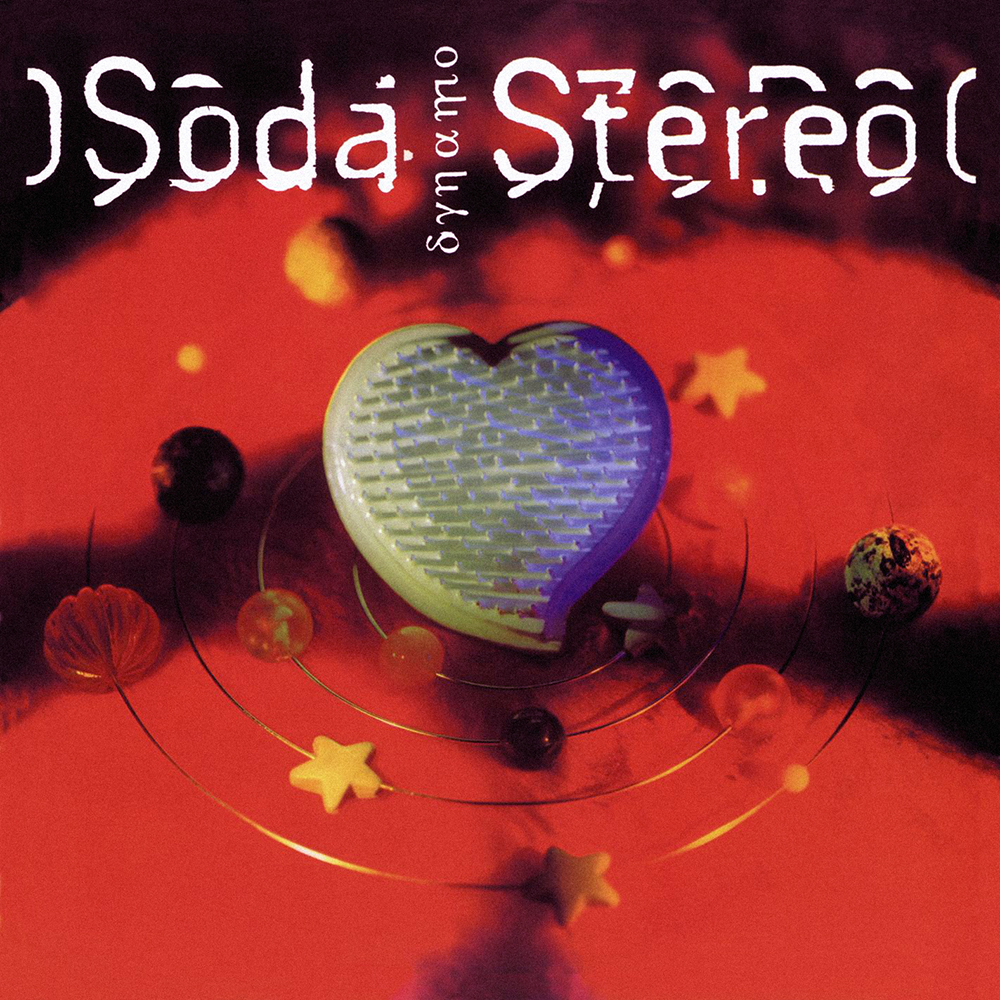

Álbum: Soda Stereo
Lanzamiento: 27 de agosto de 1984 por Estudio CBS (Buenos Aires, Argentina)
Canciones:
- ¿Por qué no puedo ser tu Jet-Set?
- Sobredosis de T.V.
- Te hacen falta vitaminas
- Tratame suavemente
- Dietético
- Tele-Ka
- Ni un Segundo
- Un misil en mi placard
- El tiempo es dinero
- Afrodisíacos
- Mi novia tiene biceps

Álbum: Nada Personal
Lanzamiento: 21 de noviembre de 1985 por Estudios Moebio (Buenos Aires, Argentina)
Canciones:
- Nada personal
- Si no fuera por..
- Cuando pase el temblor
- Danza rota
- El cuerpo del delito
- Juego de seducción
- Estoy azulado
- Observándonos (Satélites)
- Imágenes retro (Telarañas)
- Ecos

Álbum: Signos
Lanzamiento: 10 de noviembre de 1986 por Discográfica: Sony Music
Canciones:
- Sin sobresaltos
- El rito
- Prófugos
- No existes
- Persiana americana
- En camino
- Signos
- Final caja negra

Álbum: Doble Vida
Lanzamiento: : 15 de septiembre de 1988 por Discográfica: Sony Music
Canciones:
- Pícnic en el 4° B
- En la ciudad de la furia
- Lo que sangra (La cúpula)
- En el borde
- Languis
- Día común - Doble vida
- Corazón delator
- El ritmo de tus ojos
- Terapia de amor intensiva
Álbum: Canción animal
Lanzamiento: : 7 de agosto de 1990 por Discográfica: Sony Music
Canciones:
- (En) El séptimo día
- Un millón de años luz
- Canción animal
- 1990
- Sueles dejarme solo
- De música ligera
- Hombre al agua
- Entre caníbales
- Té para 3
- Cae el sol

Álbum: Dynamo
Lanzamiento: : 26 de octubre de 1992 por Discográfica: Sony Music
Canciones:
- Secuencia inicia
- Toma la ruta
- En remolinos
- Primavera 0
- Camaleón
- Luna roja
- Sweet sahumerio
- Ameba
- Nuestra Fe
- Claroscuro
- Fue
- Texturas